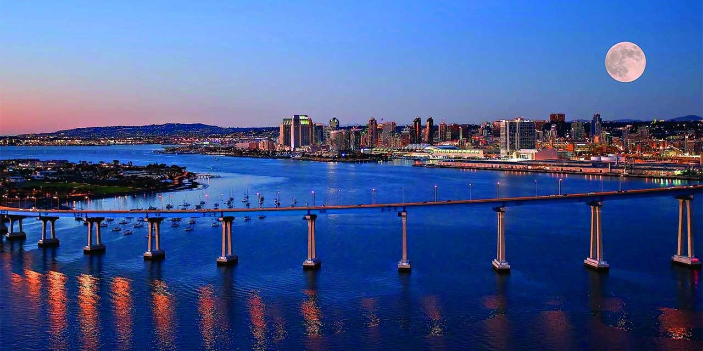
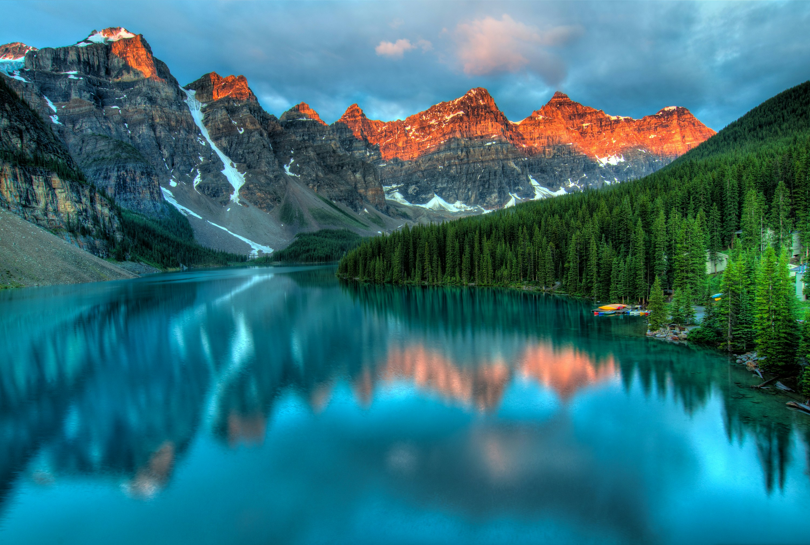
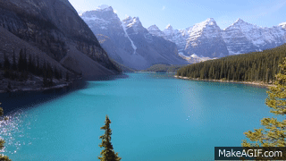

Welcome to Diag Squirrel Kingdom, your go-to destination for all things pets, recipes, and travel! Explore a world of captivating content where we cater to your love for furry companions, culinary delights, and globetrotting adventures.
San Diego

Geographical Location: North America
About San Diego: San Diego is a city in the U.S. state of California on the coast of the Pacific Ocean, approximately 120 miles south of Los Angeles and immediately adjacent to the border with Mexico. With an estimated population of 1,423,851 as of July 1, 2019, San Diego is the eighth-largest city in the United States and second-largest in California. It is part of the San Diego–Tijuana conurbation.
Climate: San Diego has a Mediterranean-type climate with mild, wet winters and long, dry summers.
Photo Gallery

This is a San Diego Beach
This is a San Diego Speeding up
New York City

Geographical Location: North America
About New York City: New York City (NYC), often simply called New York, is the most populous city in the United States. With an estimated 2019 population of 8,336,817 distributed over about 302.6 square miles (784 km2), New York is also the most densely populated major city in the United States. Located at the southern tip of the U.S. state of New York, the city is the center of the New York metropolitan area, the largest metropolitan area in the world by urban landmass. With almost 20 million people in its metropolitan statistical area and approximately 23 million in its combined statistical area, it is one of the world's most populous megacities.
Climate: New York City has a humid subtropical climate and is part of USDA hardiness zone 7b. New York City has hot, humid summers and cold, wet winters.
Photo Gallery

This is the heart of New York

This is New York by sky hovering slowly
Banff National Park
 Geographical Location: Canada
About Banff: Banff is a town within Banff National Park in Alberta, Canada. It is located in Alberta's Rockies along the
Climate: Banff has a subarctic climate with long, cold, and snowy winters, and mild summers.
Photo Gallery class
This is Banff by road.

These are raging waters in Banff.